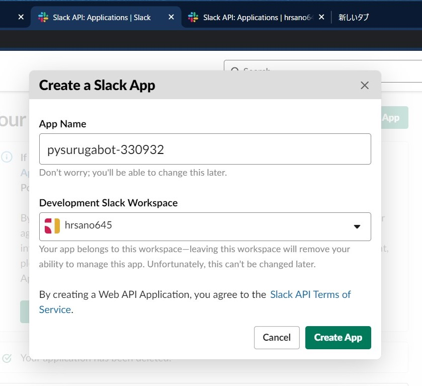
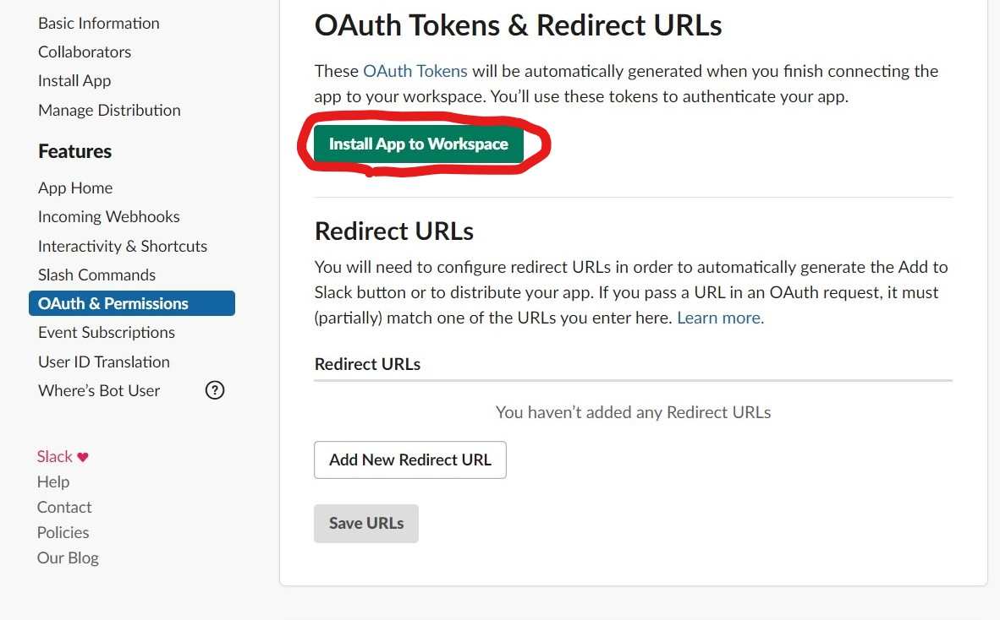

Slackbotの作成¶
チュートリアルで扱うSlackbotを実装します。
Slackアプリの作成と設定¶
まず初めにBotとなるSlackアプリをSlack上で作成します。
「Create a Slack App」からApp Nameにアプリ名を入力します。（このアプリ名はHerokuのアプリ名でも利用します。
Slack WorkSpaceはハンズオン用に新たに取得したワークスペースを利用してください。
アプリが作成できたら、「OAuth & Permissions」の「Scopes」>「Bot Token Scopes」にスコープの設定を行います。

「Bot Token Scope」はBotとなるSlackアプリがSlackワークスペースに利用できる権限の範囲（スコープ）です。
この時点では`chat:write`のみで、botがSlackへメッセージを送るためのスコープのみを設定していますが、後ほどの設定で、いくつか追加されます。

追加したら、ページの上にある「Install App to Workspace」をクリックし、SlackアプリをSlackワークスペースへ追加します。

追加が終わると、「Bot User OAuth Access Token」が表示されます。このトークンをまず控えてください。

次に、右上の「Basic Information」へ戻り、「App Credentials」の中にある「Signing Secret」を控えます。